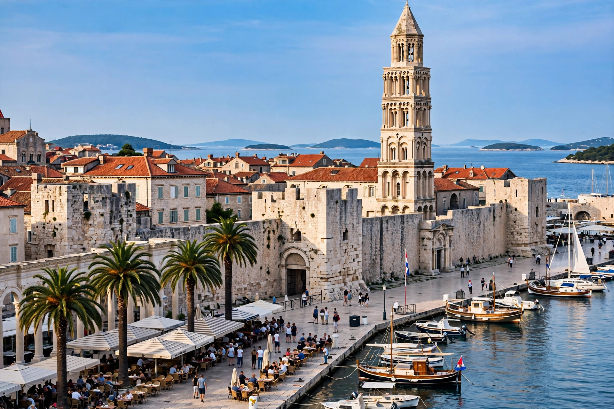

| Split | |
|---|---|
| Country | Croatia |
| Region | Dalmatia |
| County | Split-Dalmatia |
| Population | approx. 160,000 (city) |
Split is the second-largest city of Croatia and the largest city on the Croatian Adriatic coast. It is the administrative centre of Split-Dalmatia County and the historical region of Dalmatia. The city grew up around the palace built for the retired Roman emperor Diocletian at the turn of the 4th century AD.

Although Greek colonists had a settlement (Aspálathos) in the area, the city's origin lies with Diocletian's Palace, a fortified villa-palace built between about 295 and 305 AD on the shore of a bay near Salona, the provincial capital. After Salona was destroyed by Avar and Slav attacks in the 7th century, its inhabitants took refuge inside the palace walls, and the palace gradually became the city itself. Split subsequently passed among Byzantine, Croatian, Hungarian-Croatian, Venetian (1420–1797), Austrian, French and Yugoslav rulers before becoming part of independent Croatia in 1991.
The historical complex of Split with the Palace of Diocletian is a UNESCO World Heritage Site. Within the palace are the Peristyle square, the Cathedral of St. Domnius (originally Diocletian's mausoleum, with a Romanesque bell tower), the Temple of Jupiter and the palace cellars. The Riva promenade fronts the harbour, and the wooded Marjan hill rises west of the old town. Split is also a ferry hub for the Dalmatian islands and home to the Hajduk Split football club.